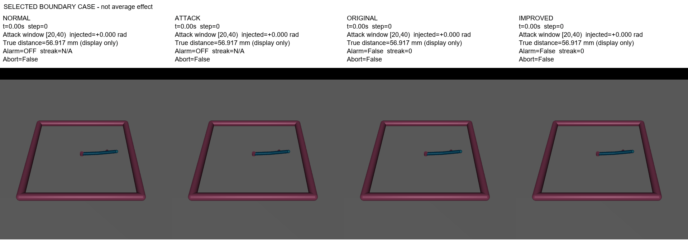

Truth is shown for evaluation only. GIF uses slowed playback; displayed time is simulation time. Aborted trajectories freeze. This selected example does not establish average benefit.

Numeric records: episodes.csv, config.json, traces.jsonl.gz. This is a generated simulator replay, not a screen recording.